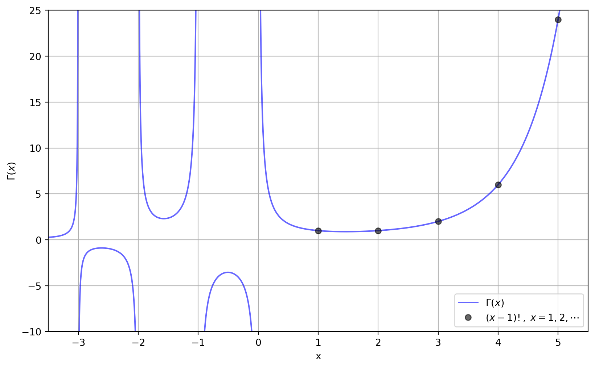
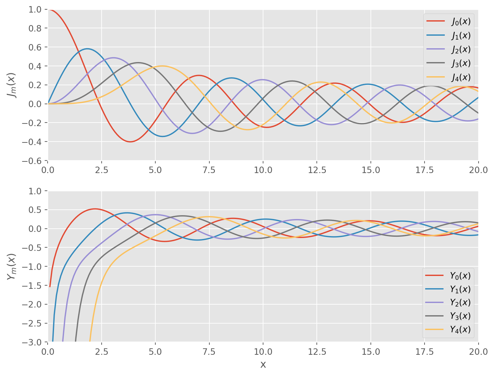
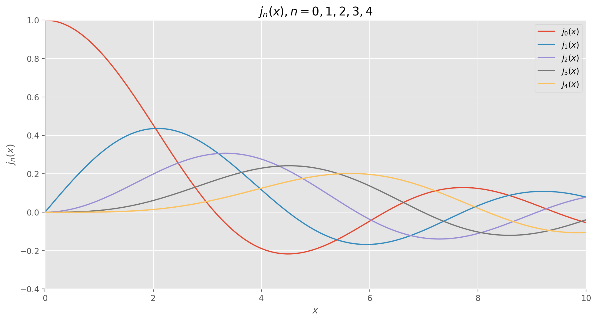
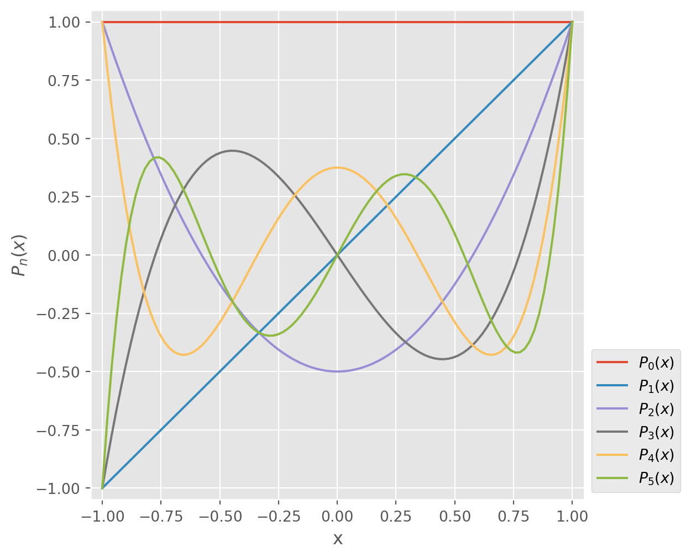

Engineering Mathematics I
Chapter 5. Series Solutions of Linear Differential Equations
5.1 Solutions about Ordinary Points
A power series in \(x -a\) is an infinite series of the form
\[\sum_{n=0}^\infty c_n(x -a)^n = c_0 +c_1(x -a) +c_2(x -a)^2 +\cdots\]
Such a series is also said to be a power series centered at \(a\)
A power series is convergent if its sequence of partial sums converges
Convergence of power series can often be determined by the ratio test. Suppose that \(c_n \neq 0\) for all \(n\), and that
\[\lim_{n \to \infty} \left| \frac{c_{n+1} (x -a)^{n +1}}{c_n (x -a)^n} \right| =|x -a| \lim_{n \to \infty} \left| \frac{c_{n +1}}{c_n} \right| =L\]
If \(L<1\), the series converges absolutely, if \(L>1\), the series diverges, and if \(L=1\), the test is inconclusive
Every power series has a radius of convergence, \(R\). If \(R>0\), a power series \(\sum_{n=0}^\infty c_n (x -a)^n\) converges for \(|x -a| < R\)
A function \(~f\) ia analytic at point \(a\) if it can be represented by a power series in \(x -a\) with a positive radius of convergence
Power series can be combined through the operations of addition, multiplication, and division
Consider the linear second-order DE
\[a_2(x) y'' +a_1(x) y' +a_0(x)y = 0,\;\;a_2(x)\neq0\]
Divide by \(a_2(x)\) to put into standard form
\[y'' +P(x)y' +Q(x)y = 0\]
Point \(x_0\) is an ordinary point of the DE if both \(P(x)\) and \(Q(x)\) are analytic at \(x_0\). \(~\)A point that is not an ordinary point is a singular point of the equation
If \(x=x_0\) is an ordinary point of the DE, \(~\)we can always find two linearly independent solutions in the form of a power series centered at \(x_0\)
A series solution converges at least on some interval defined by \(|x -x_0|<R\), \(~\)where \(R\) is the distance from \(x_0\) to the closest singular point
Example: \(~\) Solve \(y'' +xy =0\)
Since there are no finite singular points, \(~\)two power series solutions are guaranteed, centered at \(0\), convergent for \(|x|>\infty\)
Substituting \(~y=\sum_{n=0}^\infty c_n x^n\) and the second derivative \(y''=\sum_{n=2}^\infty c_n n(n -1) x^{n -2}\) into the DE gives
\[ \begin{align*} y'' +xy &= \sum_{n=2}^\infty c_n n(n-1) x^{n -2} +\sum_{n=0}^\infty c_n x^{n +1}\\ &= 2c_2 +\sum_{k=1}^{\infty} \left[(k +1)(k +2) c_{k +2} +c_{k -1} \right] x^k =0 \end{align*} \]
The coefficient of each power of \(x\) be set equal to zero:
\[c_2 =0 \;\;\text{and}\;\; \displaystyle c_{k +2} =-\frac{c_{k -1}}{(k+1)(k+2)}, \;k=1,2,3,\cdots\]
\[{\scriptsize \begin{align*} c_3 &= -\frac{c_0}{2\cdot3} \\ c_4 &= -\frac{c_1}{3\cdot4} \\ c_5 &= -\frac{c_2}{4\cdot5} = 0 \\ c_6 &= -\frac{c_3}{5\cdot6} = \frac{c_0}{2\cdot3\cdot5\cdot6} \\ c_7 &= -\frac{c_4}{6\cdot7} = \frac{c_1}{3\cdot4\cdot6\cdot7}\\ c_8 &= -\frac{c_5}{7\cdot8} = 0 \\ &\;\;\vdots \end{align*}}\]
After grouping the terms containing \(c_0\) and the terms containing \(c_1\), \(~\)we obtain \(y = c_0 y_1(x) +c_1 y_2(x)\)
\[\begin{align*} y_1(x) &= 1 +\sum_{n=1}^\infty \frac{(-1)^n}{2\cdot3 \cdots (3n -1)(3n)}x^{3n}\\ y_2(x) &= x +\sum_{n=1}^\infty \frac{(-1)^n}{3\cdot4 \cdots (3n)(3n +1)}x^{3n +1} \end{align*}\]
5.2 Solutions about Singular Points
Consider the linear second-order DE
\[(x -x_0)^2 y'' +(x -x_0) p(x) y' +q(x) y = 0\]
Point \(x_0\) is a regular singular point of the DE if both \(p(x)\) and \(q(x)\) are analytic at \(x_0\)
A singular point that is not regular is an irregular singular point of the equation
To solve a DE about a regular singular point, \(~\)we employ Frobenius’ Theorem
If \(x_0\) is a regular singular point of the standard DE, \(~\)there exists at least one nonzero solution of the form
\[y=(x -x_0)^r \sum_{n=0}^\infty c_n (x -x_0)^n = \sum_{n=0}^\infty c_n (x -x_0)^{n+r}\]
where \(r\) is a constant, and the series converges at least on some interval, \(~0 < x -x_0 < R\)
After substituting \(y =\sum_{n=0}^\infty c_n (x -x_0)^{n+r}\) into a DE and simplifying, the indicial equation is obtained, \(~\)a quadratic equation in \(r\) that results from equating the total coefficient of the lowest power of \(x\) to zero
The indicial roots are the solutions to the quadratic equation and are then substituted into a recurrence relation
Suppose that \(x=x_0\) ia a regular singular point of a DE and the indicial roots are \(r_1\) and \(r_2\): \(\;r_1 \geq r_2\)
Case I
\(r_1\) and \(r_2\) are distinct and do not differ by an integer,
\[\begin{align*} y_1(x) &= \sum_{n=0}^\infty \color{red}{c_n} (x -x_0)^{n +\color{red}{r_1}} \\ y_2(x) &= \sum_{n=0}^\infty \color{red}{b_n} (x -x_0)^{n +\color{red}{r_2}} \end{align*}\]
Case II
\(r_1 -r_2 = N\), \(~\)where \(N\) is a positive integer,
\[\begin{align*} y_1(x) &= \sum_{n=0}^\infty \color{red}{c_n} (x -x_0)^{n +\color{red}{r_1}}, \; c_0 \neq 0\\ y_2(x) &= \color{red}{C}y_1(x)\ln (x -x_0) +\sum_{n=0}^\infty \color{red}{b_n} (x -x_0)^{n +\color{red}{r_2}}, \; b_0 \neq 0 \end{align*}\]
Case III
\(r_1=r_2\),
\[\begin{align*} y_1(x) &= \sum_{n=0}^\infty \color{red}{c_n} (x -x_0)^{n +\color{red}{r_1}}, \; c_0 \neq 0\\ y_2(x) &= y_1(x)\ln (x -x_0) +\sum_{n=0}^\infty \color{red}{b_n} (x -x_0)^{n +\color{red}{r_1} } \end{align*}\]
Example: \(~\) Solve \(\,2xy'' +(1 +x)y' +y = 0\)
Substituting \(y = \sum_{n=0}^\infty c_n x^{n +r}\) gives
\[{\tiny \begin{align*} 2xy'' &+(1 +x)y' +y \\&= 2\sum_{n=0}^\infty (n +r)(n +r -1)c_n x^{n +r -1} +\sum_{n=0}^\infty (n +r) c_n x^{n +r -1} +\sum_{n=0}^\infty (n +r) c_n x^{n +r} +\sum_{n=0}^\infty c_n x^{n +r}\\ &= x^r\left[r(2r -1) c_0 x^{-1} +\sum_{k=0}^\infty [(k + r +1)(2k +2r +1) c_{k +1} +(k +r +1) c_k] x^k \right] = 0 \end{align*}} \]
which implies
\[\begin{align*} &r(2r -1) = 0\\ &(k + r +1)(2k +2r +1) c_{k +1} +(k +r +1) c_k =0, \;\;k=0,1,\cdots \end{align*}\]
We see that the indicial roots are \(r_1=\frac{1}{2}\) and \(r_2=0\)
\[\begin{align*} r_1 = \frac{1}{2}, &\;\;c_{k+1} =-\frac{c_k}{2(k +1)}, \;k=0,1,2, \cdots\, \\ r_2 = 0,\; &\;\;c_{k+1} =-\frac{c_k}{2k +1}, \;k=0,1,2, \cdots \,\\ \end{align*}\]
For \(r_1=\frac{1}{2}\),
\[\small \begin{align*} c_1 &= -\frac{c_0}{2\cdot1}\\ c_2 &= -\frac{c_1}{2\cdot2}=\frac{c_0}{2^2\cdot2!}\\ c_3 &= -\frac{c_2}{2\cdot3}=\frac{-c_0}{2^3\cdot3!}\\ c_4 &= -\frac{c_3}{2\cdot4}=\frac{c_0}{2^4\cdot4!}\\ &\;\vdots \\ c_n &= \frac{(-1)^n c_0}{2^n n!} \end{align*}\]
For \(r_2=0\),
\[\small \begin{align*} c_1 &= -\frac{c_0}{1}\\ c_2 &= -\frac{c_1}{3}=\frac{c_0}{1\cdot3}\\ c_3 &= -\frac{c_2}{5}=\frac{-c_0}{1\cdot3\cdot5}\\ c_4 &= -\frac{c_3}{7}=\frac{c_0}{1\cdot3\cdot5\cdot7}\\ &\;\vdots \\ c_n &= \frac{(-1)^n c_0}{1\cdot3\cdot5\cdot7\cdots (2n -1)} \end{align*}\]
The series solutions are
\[ \begin{align*} y_1(x) &= x^{1/2} \left[ 1 +\sum_{n=1}^\infty \frac{(-1)^n}{2^n n!} x^n \right ]\\ y_2(x) &= 1 +\sum_{n=1}^\infty \frac{(-1)^n}{1\cdot3\cdot5\cdot7\cdots(2n -1)} x^n \end{align*}\]
5.3 Special Functions
The following DEs occur frequently in advanced studies in applied mathematics, physics, and engineering
Bessel’s equation of order \(\nu\), \(~\)solutions are Bessel functions
\[x^2 y'' +xy' +(x^2 -\nu^2) y =0\]
Legendre’s equation of order \(n\), \(~\)solutions are Legendre polynomials
\[(1 -x^2)y'' -2xy' +n(n +1)y =0\]
5.3.1 Bessel Functions
Because \(x=0~\) is a regular singular point of Bessel’s equation, there exists at least one solution of the form \(y=\sum_{n=0}^\infty c_n x^{n +r}\)
\[ \begin{align*} x^2 &y'' +xy' +(x^2 -\nu^2)y \\ &= \sum_{n=0}^\infty c_n (n +r)(n +r -1) x^{n +r} +\sum_{n=0}^\infty c_n (n +r) x^{n +r} \\ &\qquad+\sum_{n=0}^\infty c_n x^{n +r +2} -\nu^2 \sum_{n=0}^\infty c_n x^{n +r}\\ &= \color{red}{c_0 (r^2 -\nu^2) x^r} +x^r \sum_{n=1}^\infty c_n [(n +r)^2 -\nu^2] x^n +x^r \sum_{n=0}^\infty c_n x^{n +2} = 0 \end{align*} \]
The indicial equation is \(~r^2 -\nu^2=0\) \(~\)so that the indicial roots are \(r_1=\nu\) and \(r_2=-\nu\). When \(\,r_1=\nu \geq 0\),
\[\tiny \begin{align*} x^\nu \sum_{n=1}^\infty &c_n n(n +2\nu) x^n +x^\nu \sum_{n=0}^\infty c_n x^{n +2} \\ &= x^\nu \left[ (1 +2\nu) c_1 x +\sum_{k=0}^\infty \left[(k +2)(k +2 +2\nu) c_{k+2} +c_k\right]x^{k +2} \right] = 0 \\ &\Downarrow \\ c_1 &= 0,\;\; c_{k+2} = \frac{-c_k}{(k +2)(k +2 +2\nu)}, \;\;k=0,1,2,\cdots \\ &\Downarrow\\ c_3&=c_5=c_7=\cdots=0, \\ c_{2n}&=-\frac{c_{2n -2}}{2^2 n(n +\nu)} \;\;\leftarrow\;\;k+2=2n \end{align*}\]
Thus
\[{\scriptsize \begin{align*} c_2 &= -\frac{c_0}{2^2\cdot1\cdot(1 +\nu)}\\ c_4 &= -\frac{c_2}{2^2\cdot2\cdot(2 +\nu)} \\ &= \frac{c_0}{2^4 \cdot 1 \cdot 2(1 +\nu)(2 +\nu)}\\ c_6 &= -\frac{c_4}{2^2\cdot3\cdot(3 +\nu)} \\ &=-\frac{c_0}{2^6 \cdot 1 \cdot 2 \cdot 3 (1 +\nu)(2 +\nu)(3 +\nu)}\\ &\;\vdots \\ c_{2n} &= \frac{(-1)^n c_0}{2^{2n} n! (1 +\nu)(2 +\nu)\cdots(n +\nu)}\\ \end{align*}}\]
\[{\scriptsize \begin{align*} &\;\big\Downarrow \;{\scriptsize\text{It is standard practice to choose}}\; \\ c_0&=\frac{1}{2^\nu \Gamma(1 +\nu)} \\ &\text{thus, } \\ c_{2n} &= \frac{(-1)^n}{2^{2n +\nu} n!\, \Gamma(1 +\nu +n)} \end{align*}}\]
Note: \(~\) \(\displaystyle\Gamma(\nu)=\;\int_0^\infty x^{\nu -1} e^{-x} \,dx\), \(\;\Gamma(\nu +1)=\nu\Gamma(\nu)\)
Bessel Functions of the First Kind
The series solution \(y_1=\sum_{n=0}^\infty c_{2n} x^{2n +\nu}\) is usually denoted by \(J_\nu(x)\)
\[J_\nu(x)=\sum_{n=0}^\infty \frac{(-1)^n}{n!\, \Gamma(1 +\nu +n)} \left( \frac{x}{2} \right)^{2n +\nu}\]
Also, for the second exponent \(r_2=-\nu\)
\[J_{-\nu}(x)=\sum_{n=0}^\infty \frac{(-1)^n}{n!\, \Gamma(1 -\nu +n)} \left( \frac{x}{2} \right)^{2n -\nu}\]
When \(~\nu=0\), \(~J_0(x)\)
When \(r_1 -r_2 = 2\nu~\) is not positive integer, \(~J_\nu(x)\) and \(J_{-\nu}(x)\) are linearly independent
When \(r_1 -r_2 = 2\nu~\) is positive integer, \(~\)there are two possibilities
When \(\nu = m =\) positive integer, \(~J_{-m}(x)\) is a constant multiple of \(J_m(x)\) : \(~J_m(x)=(-1)^m J_{-m}(x)\)
When \(\nu\) is half an odd positive integer, \(~J_\nu(x)\) and \(J_{-\nu}(x)\) are linearly independent
Example: \(~\) Solve \(~x^2y'' +xy' +(x^2 -\frac{1}{4})y=0\)
Bessel Functions of the Second Kind
If \(\nu \neq\) integer
\[Y_\nu(x)=\frac{\cos \nu \pi J_\nu(x) -J_{-\nu}(x)}{\sin \nu \pi}\]
\(J_\nu(x)\) and \(Y_\nu(x)\) are linearly independent solutions of
\[x^2 y'' +xy' +(x^2 -\nu^2) y =0\]
As \(\nu \rightarrow m\,(\text{an integer})\),
\[Y_m(x)=\lim_{\nu \to m} Y_\nu(x)\]
\(J_m(x)\) and \(Y_m(x)\) are linearly independent solutions of
\[x^2 y'' +xy' +(x^2 -m^2) y =0\]
Hence for any value of \(\nu\), \(~\)the general solution of Bessel equation can be written as
\[y=c_1 J_\nu(x) +c_2 Y_\nu(x)\]
\(Y_\nu(x)\) is called the Bessel function of the second kind of order \(\nu\)
Example: \(~\) Solve \(~x^2y'' +xy' +(x^2 -9)y=0\)
DEs Solvable in Terms of Bessel Functions
Parametric Bessel equation of order \(\nu\)
\[\begin{align*} x^2 y'' +x y' &+(\color{red}{\alpha^2} x^2 -\nu^2) y = 0 \\ &\;\Big\Downarrow \;t=\alpha x, \;\alpha>0 \\ t^2\frac{d^2y}{dt^2} +t\frac{dy}{dt} &+(t^2 -\nu^2)y = 0 \\ &\Downarrow \\ y = c_1 J_\nu(\color{red}{\alpha} x) &+c_2 Y_\nu(\color{red}{\alpha} x) \end{align*}\]
Modified Bessel equation of order \(\nu\)
\[\begin{align*} x^2 y'' +x y' &\color{red}{-}(x^2 +\nu^2) y = 0 \\ &\;\Big\Downarrow \;t=ix \\ t^2\frac{d^2y}{dt^2} +t\frac{dy}{dt} &+(t^2 -\nu^2)y = 0 \\ &\;\Bigg\Downarrow \;{\tiny I_\nu(x)=i^{-\nu} J_\nu(ix), \;K_\nu(x)=\frac{\pi}{2}\frac{I_{-\nu}(x) -I_{\nu}(x)}{\sin\nu\pi}, \;K_m(x)=\lim_{\nu\to m} K_\nu(x) } \\ y = c_1 \color{red}{I_\nu(x)} &+c_2 \color{red}{K_\nu(x)} \end{align*}\]
- Yet another equation
\[{\small \begin{align*} {\scriptsize y'' +\frac{1 -2a}{x} y' }&{\scriptsize +\left( b^2 c^2 x^{2c -2} +\frac{a^2 -p^2 c^2}{x^2}\right)y=0, \;p \geq 0 } \\ &\Bigg\Downarrow \;{\scriptsize z=bx^c, \;y(x)=\left( \frac{z}{b} \right )^{a/c} w(z) }\\ y=x^a &\left[c_1 J_p(bx^c) +c_2 Y_p(bx^c)\right] \end{align*}}\]
- The aging spring
\[{\small \begin{align*} m\ddot{x} &+ke^{-\alpha t}x = 0, \;\alpha > 0 \\ &\,\Bigg\Downarrow \;{\scriptsize s = \frac{2}{\alpha} \sqrt{\frac{k}{m}} e^{-\alpha t/2} }\\ {\scriptsize s^2 \frac{d^2 x}{ds^2} }&{\scriptsize +s\frac{dx}{ds} +s^2 x = 0 } \end{align*}}\]
Properties of Bessel Functions when \(m\) is integer
\(\displaystyle \color{blue}{J_m(x) = \sum_{n=0}^\infty \frac{(-1)^n}{n!(n + m)!} \left( \frac{x}{2} \right)^{2n + m}}\)
\(J_{-m}(x)=(-1)^m J_m(x)\)
\(J_{m}(-x)=(-1)^m J_m(x)\)
\(J_m(0)=\left\{\begin{matrix} 0, & m > 0\\ 1, & m = 0 \end{matrix}\right.\)
\(\displaystyle\lim_{x \to 0^+} Y_m(x)=-\infty\)

Differential Recurence Relation
\[ \begin{align*} xJ_\nu'(x)&= {\scriptsize \sum_{n=0}^\infty \frac{(-1)^n(2n +\nu)}{n! \, \Gamma(1 +\nu +n)} \left( \frac{x}{2}\right )^{2n +\nu}}\\ &= {\tiny \nu \sum_{n=0}^\infty \frac{(-1)^n}{n! \, \Gamma(1 +\nu +n)} \left( \frac{x}{2}\right )^{2n +\nu} +x\sum_{n=1}^\infty \frac{(-1)^n}{(n -1)! \, \Gamma(1 +\nu +n)} \left( \frac{x}{2}\right )^{2n +\nu -1} }\\ &= {\scriptsize \nu J_\nu(x) -x\sum_{k=0}^\infty \frac{(-1)^k}{k! \, \Gamma(2 +\nu +k)} \left( \frac{x}{2}\right )^{2k +\nu +1} }\\ &= {\scriptsize \nu J_\nu(x) -x J_{\nu+1}(x) }\\ &\;\big\Downarrow\;\times x^{-\nu -1} \\ \color{blue}{\frac{d}{dx} [x^{-\nu}J_\nu(x)]}& \color{blue}{=-x^{-\nu} J_{\nu+1}(x)} \end{align*} \]
and
\[ \begin{align*} xJ_\nu'(x)&= -\nu J_\nu(x) +x J_{\nu -1}(x)\\ &\;\big\Downarrow\;\times x^{\nu -1} \\ \color{blue}{\frac{d}{dx} [x^{\nu}J_\nu(x)]} & \color{blue}{=x^{\nu} J_{\nu -1}(x)} \end{align*} \]
Example: \(~\) \(J_0'(x)=-J_1(x)\)
Spherical Bessel Functions:
When solving the Helmholtz equation in spherical coordinates by separation of variables, \(~\)the radial equation has the form
\[x^2 y'' +2xy' +\left(x^2 -n(n+1)\right)y=0\]
The two linearly independent solutions to this equation are called the spherical Bessel functions \(j_n\) and \(y_n\)
\[{\scriptsize j_n(x)=\color{blue}{\sqrt{\frac{\pi}{2x}}} J_{n +\frac{1}{2}}(x) }\]
\[{\scriptsize y_n(x)=\color{blue}{\sqrt{\frac{\pi}{2x}}} Y_{n +\frac{1}{2}}(x)=(-1)^{n +1}\sqrt{\frac{\pi}{2x}} J_{-n -\frac{1}{2}}(x) }\]
when \(\nu=n +\frac{1}{2}\) is half an odd integer, that is, \(~\pm\frac{1}{2}\), \(\pm\frac{3}{2}\), \(\pm\frac{5}{2}\), \(\cdots\)
Let’s consider the case when \(~\nu=\frac{1}{2}\),
\[\tiny J_{1/2}(x)=\sum_{n=0}^\infty \frac{(-1)^n}{n!\, \Gamma(1 +\frac{1}{2} +n)} \left( \frac{x}{2} \right)^{2n +1/2}\]
where \[{\tiny \begin{align*} \Gamma\left(\frac{1}{2} \right ) &= \sqrt{\pi}\\ \Gamma\left(\frac{3}{2} \right ) &= \Gamma\left(1 +\frac{1}{2} \right ) = \frac{1}{2}\Gamma\left(\frac{1}{2} \right )=\frac{1}{2} \sqrt{\pi}\\ \Gamma\left(\frac{5}{2} \right ) &= \Gamma\left(1 +\frac{3}{2} \right ) = \frac{3}{2}\Gamma\left(\frac{3}{2} \right )=\frac{3}{2^2} \sqrt{\pi} = \frac{3\cdot2}{2^3} \sqrt{\pi} = \frac{3!}{2^3} \sqrt{\pi}\\ \Gamma\left(\frac{7}{2} \right ) &= \Gamma\left(1 +\frac{5}{2} \right ) = \frac{5}{2}\Gamma\left(\frac{5}{2} \right ) = \frac{5\cdot3}{2^3} \sqrt{\pi} = \frac{5\cdot4\cdot3\cdot2}{2^3\cdot4\cdot2} \sqrt{\pi} = \frac{5!}{2^5 2!} \sqrt{\pi}\\ &\;\vdots \\ \Gamma\left(1 +\frac{1}{2} +n \right ) &= \frac{(2n +1)!}{2^{2n +1} n!} \sqrt{\pi} \end{align*}}\]
Hence
\[J_{1/2}(x)={\tiny \sum_{n=0}^\infty \frac{(-1)^n}{n!\, \frac{(2n +1)!}{2^{2n +1} n!} \sqrt{\pi}} \left( \frac{x}{2} \right)^{2n +1/2} = \sqrt{\frac{2}{\pi x}}\sum_{n=0}^\infty \frac{(-1)^n}{(2n +1)!} x^{2n +1} } =\sqrt{\frac{2}{\pi x}}\sin x\]
Show that
\[J_{-1/2}(x)=\sqrt{\frac{2}{\pi x}}\cos x\]

5.3.2 Legendre Polynomials
Since \(x=0\) is an ordinary point of Legendre’s equation, \(~\)we substitute the series \(y=\sum_{j=0}^\infty c_j x^j~\) to get
\[\begin{align*} {\scriptsize (1 -x^2)}&{\scriptsize y'' -2xy' +n(n +1)y = }\\ &{\tiny [n(n+1)c_0 +2c_2] +[(n -1)(n +2)c_1 +6c_3]x }\\ &{\tiny +\sum_{j=2}^\infty [(j +2)(j +1) c_{j +2} +(n -j)(n +j +1)c_j] x^j = 0}\\ &\Downarrow \\ {\tiny c_2} & {\tiny = -\frac{n(n+1)}{2} c_0 }\\ {\tiny c_3 }& {\tiny = -\frac{(n -1)(n +2)}{6} c_1 }\\ {\tiny c_{j +2} } & {\tiny =-\frac{(n -j)(n +j +1)}{(j +2)(j +1)} c_j, \;\; j=2,3,4,\cdots } \end{align*}\]
The recurrence relation yields
\[{\tiny \begin{align*} c_2&= -\frac{n(n+1)}{2!} c_0\\ c_4&= -\frac{(n -2)(n +3)}{4\cdot3}c_2=\frac{(n -2)n(n+1)(n +3)}{4!} c_0\\ c_6&= -\frac{(n -4)(n +5)}{6\cdot5}c_4=-\frac{(n -4)(n -2)n(n+1)(n +3)(n +5)}{6!} c_0\\ &\,\vdots \end{align*}}\]
\[{\tiny \begin{align*} c_3&= -\frac{(n -1)(n+2)}{3!} c_1\\ c_5&= -\frac{(n -3)(n +4)}{5\cdot4}c_3=\frac{(n -3)(n -1)(n+2)(n +4)}{5!} c_1\\ c_7&= -\frac{(n -5)(n +6)}{7\cdot6}c_5=-\frac{(n -5)(n -3)(n -1)(n+2)(n +4)(n +6)}{7!} c_1\\ &\,\vdots \end{align*}}\]
Thus for at least \(|x|<1\), \(~\)we obtain two linearly independent power series solutions:
\[{\tiny y_1(x) = c_0 \left[1 -\frac{n(n+1)}{2!} x^2 +\frac{(n -2)n(n+1)(n +3)}{4!} x^4 -\frac{(n -4)(n -2)n(n+1)(n +3)(n +5)}{6!} x^6 \cdots \right] }\]
\[{\tiny y_2(x) = c_1 \left[x -\frac{(n -1)(n+2)}{3!} x^3 +\frac{(n -3)(n -1)(n+2)(n +4)}{5!} x^5 -\frac{(n -5)(n -3)(n -1)(n+2)(n +4)(n +6)}{7!} x^7 \cdots \right]}\]
If \(n\) is an even integer, \(~\)the series \(y_1(x)\) reduces to a polynomial of degree \(n\) with only even powers of \(x\) and the series \(y_2(x)\) diverges
If \(n\) is an odd integer, \(~\)the series \(y_2(x)\) reduces to a polynomial of degree \(n\) with only odd powers of \(x\) and the series \(y_1(x)\) diverges
- The general solution for an integer \(n\) is then given by the polynomials
For example, if \(n=4\), then
\[\scriptsize y_1(x) = c_0 \left[1 -\frac{4\cdot5}{2!} x^2 +\frac{2\cdot4\cdot5\cdot7}{4!} x^4 \right] = c_0 \left[1 -10x^2 +\frac{35}{3} x^4 \right] \]
It is traditional to choose specific values for \(c_0\) or \(c_1\), depending on whether \(n\) is an even or odd positive integer, respectively
For \(n=0\), \(~c_0=1\), and for \(n=2,4,6,\cdots\),
\[c_0=(-1)^{n/2} \frac{1\cdot 3\cdots (n -1)}{2 \cdot 4 \cdots n}\]
For \(n=1\), \(~c_1=1\), and for \(n=3,5,7,\cdots\),
\[c_1=(-1)^{(n -1)/2} \frac{1\cdot 3\cdots n}{2 \cdot 4 \cdots (n -1)}\]
For example, when \(n=4\), \(~\)we have
\[\scriptsize y_1(x) = (-1)^{4/2} \frac{1\cdot3}{2\cdot4} \left[1 -10x^2 +\frac{35}{3} x^4 \right] =\frac{1}{8} (35x^4 -30x^2 +3)\]
- Legendre Polynomials
There specific \(n\)-th degree polynomials are called Legendre polynomials and denoted by \(P_n(x)\)
\[\scriptsize \begin{align*} P_0(x) &= 1\\ P_1(x) &= x\\ P_2(x) &= \frac{1}{2}(3x^2 -1)\\ P_3(x) &= \frac{1}{2}(5x^3-3x)\\ P_4(x) &= \frac{1}{8}(35x^4 -30x^2 +3)\\ P_5(x) &= \frac{1}{8}(63x^5 -70x^3 +15x) \end{align*}\]

Properties
- \(P_n(-x)=(-1)^n P_n(x)\)
- \(P_n(1)=1\)
- \(P_n(-1)=(-1)^n\)
- \(P_n(0)=0\), \(~n\) odd
- \(P_n'(0)=0\), \(~n\) even
Rodrigues’ Formula
The Legendre polynomials can also be represented using Rodrigues’ Formula,
\[P_n(x)=\frac{1}{2^n n!} \frac{d^n}{dx^n} \left(x^2 -1\right)^n,\;(\text{RF})\]
This can be demonstrated through the following observations
- The right hand side of (RF) is a \(n\)-th order polynomial
Treating \(\left(x^2 -1\right)^n = (x -1)^n (x + 1)^n\) as a product and using Leibnitz’ rule to differentiate \(n\) times, \(~\)we have
\[\frac{d^n}{dx^n} (x -1)^n (x +1)^n = n!(x+1)^n + {\scriptsize\text{terms with } (x -1) \text{ as a factor}}\]
so that \(\displaystyle ~P_n(1) = \frac{n! 2^n}{2^n n!} =1\)
If \(~h(x) = \left(1 -x^2\right)^n\), \(~\)then \(h'(x) = -2nx(1 -x^2)^{n-1}\), \(~\)so that
\[\left(1 -x^2\right)h' + 2nx\,h = 0\]
Now differentiate \(n +1\) times, using Leibnitz, to get
\[{\scriptsize \begin{align*} \left(1 -x^2\right)h^{n +2} &-2(n +1)x h^{n +1} -2\frac{(n + 1)n}{2} h^n + 2nxh^{n +1} + 2n(n + 1)h^n = 0 \\ &\Downarrow\\ \left(1 -x^2\right)h^{n +2} &-2x h^{n +1} +n(n +1) h^n = 0 \end{align*}} \]
As the equation is linear and \(P_n(x) \propto h^n(x)\), \(~P_n(x)\) satisfies the Legendre equation of order \(n\)
\[\left(1 -x^2\right) P_n''(x) -2x P_n'(x) +n(n +1) P_n(x) = 0\]
Integral Relations
\[\int_{-1}^1 P_k(x) P_l(x) \,dx = \delta_{k,l} \frac{2}{2l +1},\;\;k \leq l\]
\[\int_{-1}^1 x P_s(x) P_r(x) \,dx = \delta_{r,s +1} \frac{2r}{(2r -1)(2r +1)}, \; r \geq s \]
Recurrence Relation
The Legendre polynomials satisfy the following recurrence relation
\[(n + 1) P_{n +1}(x) = (2n + 1) x P_n(x) -n P_{n -1}(x)\]
Consider the polynomial \(x P_n(x)\). It has degree \(n +1\) and is thus in the linear span of \(P_0, \cdots, P_{n +1}\). We can hence write \(x P_n(x)\) as a linear combination of the first \(~n +2\) Legendre polynomials:
\[ xP_n(x) = c_0 P_0(x) +c_1 P_1(x) +\cdots +c_{n +1}P_{n +1}(x) \]
Thus
\[ \scriptsize \begin{align*} \int_{-1}^1 x P_n(x) P_k(x)\,dx &= c_k \int_{-1}^1 P_k^2(x)\, dx \\ \rightarrow c_k &=\frac{2k +1}{2} \int_{-1}^1 x P_n(x) P_k(x)\,dx \end{align*} \]
These integrals vanish unless \(k = n \pm 1\) and for this case, we can use
\[ \scriptsize c_{n -1}=\frac{2n -1}{2} \int_{-1}^1 x P_n(x) P_{n -1}(x)\,dx=\frac{n}{2n +1} \]
\[ \scriptsize c_{n +1}=\frac{2n +3}{2} \int_{-1}^1 x P_n(x) P_{n +1}(x)\,dx=\frac{n +1}{2n +1} \]
Hence
\[ \begin{align*} xP_n(x) &= c_{n -1} P_{n -1}(x) +c_{n +1}P_{n +1}(x)\\ &= \frac{n}{2n +1}P_{n -1}(x)+\frac{n +1}{2n +1}P_{n +1}(x) \end{align*} \]
This is what we wanted to prove
Example: \(~\) Find the general solution of the given differential equation on \((0,\infty)\)
\(x^2y''+xy'+(x^2-\frac{1}{9})y=0\)
\(~\)
\(xy''+y'+xy=0\)
\(~\)
\(x^2y'' +xy'+(9x^2-4)y=0\)
\(~\)
\(x^2y''+xy'-(16x^2+\frac{4}{9})y=0\)
Find the general solution of the given differential equation on \((0,\infty)\)
\(x^2y''+2xy'+\alpha^2x^2y=0; \;y=x^{-1/2}u(x)\)
\(xy''+2y'+4y=0\)
\(~\)
Verify that \(I_\nu(x)=i^{-\nu}J_\nu(ix)~\) is a real function
\(~\)
Express the general solution of the given differential equation in terms of the modified Bessel functions
\[xy''+y'-7x^3y=0\]
\(~\)
First express the general solution of the given differential equation in terms of Bessel functions and then express the general solution in terms of elementary functions
\[x^2y''+4xy'+(x^2+2)y=0\]
\(~\)
Derive the following result
\[\int_0^x rJ_0(r)\,dr=xJ_1(x)\]
\[J_0'(x)=J_{-1}(x)=-J_1(x)\]
Use the solution of the aging spring equation \(mx''+ke^{-at}x=0\) to discuss the behavior of \(x(t)\) as \(t \to\infty\) in the three cases
\(c_1\neq 0, \;c_2=0\)
\(c_1=0, \;c_2\neq 0\)
\(c_1\neq 0, \;c_2 \neq 0\)
Use the recurrence relation and \(P_0(x)=1\), \(P_1(x)=x\), to generate the next six Legendre polynomials
\(~\)
Show that the differential equation
\[\sin\theta \frac{d^2y}{d\theta^2}+\cos\theta \frac{dy}{d\theta}+n(n+1)\,\sin\theta\,y=0\]
can be transformed into Legendre’s equation by means of the substitution \(x=\cos\theta\)
Find the first three positive values of \(~\lambda~\) for which the problem
\[(1-x^2)y''-2xy'+\lambda y=0\]
\[y(0)=0, \;y(x),\;y'(x)\;\text{ bounded on } [-1, 1]\]
has nontrivial solutions
The differential equation
\[(1-x^2)y''-2xy'+\left[ n(n+1) -\frac{m^2}{1-x^2} \right]y=0\]
is known as the associated Legendre equation. When \(~m=0\), this equation reduces to Legendre’s equation. \(~\)A solution of the associated equation is
\[P_n^m(x)=(1-x^2)^{m/2} \frac{d^m}{dx^m} P_n(x)\]
where \(P_n(x), \;n=0, 1,2, \cdots\) are the Legendre polynomials
The solutions \(P_n^m(x)\) for \(m=0,1,2,\cdots,\) are called associated Legendre functions
Find the associated Legendre functions \(P_0^0(x)\), \(P_1^0(x)\), \(P_1^1(x)\), \(P_2^1(x)\), \(P_2^2(x)\), \(P_3^1(x)\), \(P_3^2(x)\), and \(P_3^3(x)\)
What can you say about \(P_n^m(x)\) when \(m\) is an even non-negative integer?
What can you say about \(P_n^m(x)\) when \(m\) is a nonnegative integer and \(m>n\)?
Verify that \(y=P_1^1(x)\) satisfies the associated Legendre equation when \(n=1\) and \(m=1\)